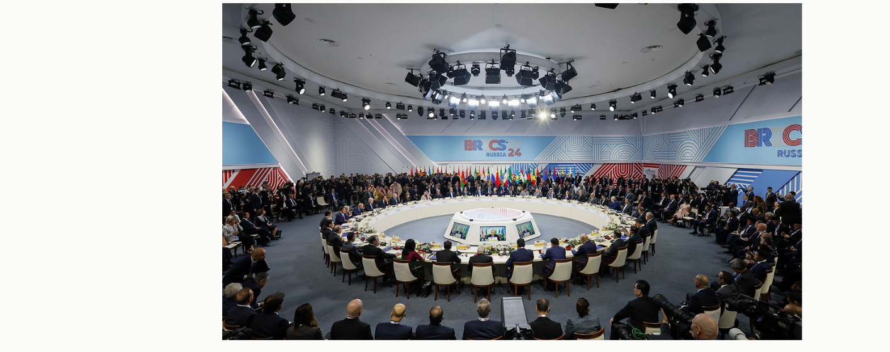
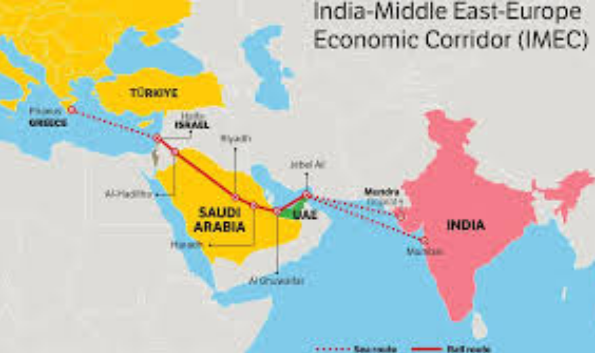
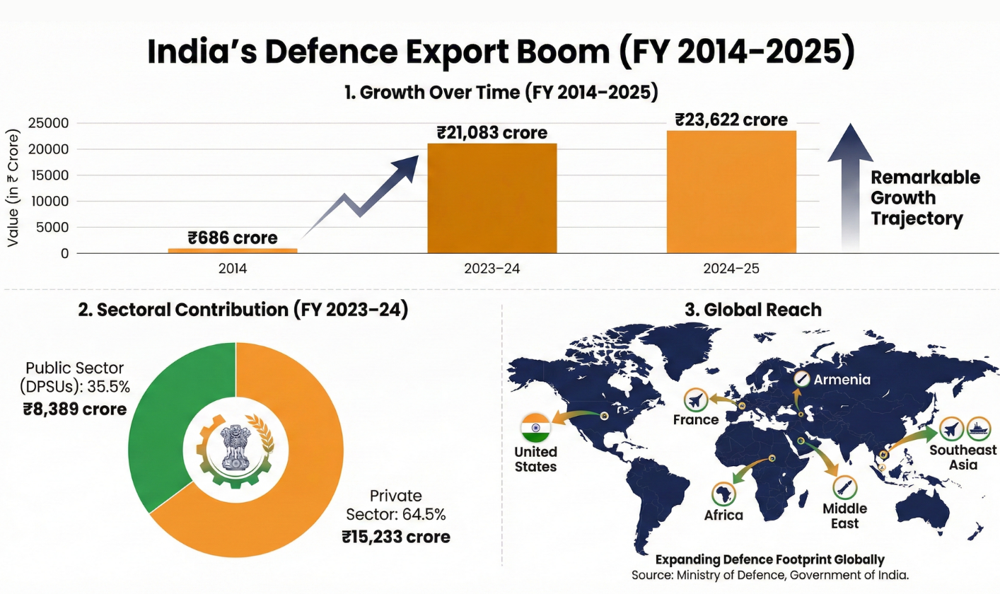

Where Opinions Stand Trial
We condemn Das’ killing, reject anti-India narrative in Bangladesh: MEA
The remarks came in response to a number of questions on the recent spurt in violence against the minority Hindu community of Bangladesh, especially after the death of Islamist leader Sharif Osman Hadi on December 18, 2025. In the aftermath of Mr. Hadi’s death, several reports of arson attacks against the minority community, and the brutal lynching of Dipu Chandra Das in Mymensingh and Amrit Mandal in Rajbari near Dhaka, have been reported in the media.
“We condemn the recent killing of a Hindu youth in Mymensingh. More than 2,900 incidents of violence against minorities have been documented by sources during the tenure of the interim government.” Randhir Jaiswal, MEA Spokesperson · Weekly Media Briefing
Referenced coverage: Reuters — “Presses fall silent after mobs torch offices of Bangladesh’s top newspapers” · Mint — “Bangladesh sidesteps India’s concerns over ‘hostilities’ against Hindu minorities, calls them ‘isolated incidents’”


Announced as a game-changing trade corridor linking India to Europe via the Middle East, IMEC promises faster connectivity. However, regional instability and unclear funding raise doubts over whether it will move beyond diplomatic intent.
With new members joining BRICS, the bloc projects itself as a counterweight to Western economic dominance. Yet internal economic asymmetries and limited currency coordination suggest the expansion may be more symbolic than transformational — for now.
Also known as Martyrdom Week, observed annually from 20–27 December to commemorate the supreme sacrifices of the family of Guru Gobind Singh Ji, the tenth Sikh Guru — including his four sons, the Sahibzade, and his mother, Mata Gujri Ji.
Attacks on commercial vessels in the Red Sea have forced shipping companies to reroute via longer paths, sharply increasing insurance premiums and freight costs. The disruption highlights how regional conflicts directly impact global inflation and consumer prices.
India could boost exports to Russia seven-fold — from $5 billion to $35 billion by 2030 — by expanding access in food, pharma, textiles, and machinery, says GTRI. The projection aligns with Moscow’s $100 billion trade goal amid President Putin’s Delhi visit.
Verdict Pending
This highlights the tension between judicial independence and accountability within a democratic system.
Analysts say India is beginning to look beyond Modi, raising questions of succession and political stability.
A recurring question across this issue’s briefs — from pretenses in the Russia relationship to arms exports as leverage.
Send us your submission via Instagram DM, specifying “For” or “Against.” Get featured in the next newsletter.
Submit on Instagram →An economic approach that prioritizes short-term government spending and tax cuts to win popular support, often disregarding long-term fiscal stability and budgetary constraints.
“The new administration’s budget reflects populist fiscalism, prioritizing generous subsidies and tax cuts aimed at winning public favor despite concerns about long-term deficits.”
India’s defence export trajectory, exhibit-stamped for the record — from a modest ₹686 crore in 2014 to a record-setting close for FY 2024–25.

An overview of India’s defence-export rise, and why it matters
₹23,622 crore worth of defence exports were recorded in FY 2024–25 — the highest ever for India. Indian defence equipment is now exported to about 80 countries across Asia, Africa, Europe, and the Middle East.
Source: Ministry of Defence, GoI · PIB
Defence exports are now a strategic economic sector for India. Arms trade growth often correlates with regional instability and rising defence demand. Governments benefit through revenue generation, geopolitical leverage, and defence-industrial growth.
Who buys arms globally? The top global arms exporters remain:
Source: SIPRI · Government of India Defence Export Data
This piece is written to help readers develop a worldview, independent of this article, to view Indian relationships in the international community. One thing you would notice in the title is a contradiction — “friends” in “realpolitik.” But isn’t realpolitik about not having friends, and being totally transactional to ensure a nation’s interests? How is India supposed to have friends while it indulges in openly transactional foreign policy? I will try my level best to explain my analytical logic for this, which might help others do the same.
When I say friends of India, I think all readers have only one name in mind — Russia (and formerly the USSR). This is such a commonly explored topic that even people not particularly interested in geopolitics are aware of this close-bound friendship. That is why I will explore two other “friendships” later; but before that, let me resolve some commonly held doubts about our relationship with Russia.
First and foremost: a doubt exists in people’s minds as to why Russia did not support India during Op Sindoor. Why did Russia ask India to cease hostilities and return to the negotiating table when India had clearly expressed no intention of doing so? Is this how a friend acts? The answer lies in the fact that what a nation says is not exactly what it wants. Remember, India has been one of the leading voices asking for cessation of the conflict in Ukraine. Why is that? Ukraine has been a leading arms supplier to Pakistan — it is not in India’s interest to have Ukraine keep up this military partnership, so why does India ask for the violence to stop? The answer is pretenses. A nation is supposed to keep up pretenses, because you can’t show your motives out in the open. I could refer you all to Augustus Caesar and how he became the “First Citizen.” He concealed his ambition — the very thing that got his predecessor Julius assassinated — and always maintained a façade of a republican. In the end, it was the Roman Republic itself that granted him his goal of becoming Emperor (the First Citizen, rather).
Remember, no single reason is a good enough parameter to define such a multi-modal system, so pretenses are one of the reasons but not the only one. Why India does this, and what it has to gain (or has already gained) from this conflict, is entirely a different matter and not really relevant to this piece.
Now, let us get into the reveal of the two “friends” mentioned earlier. This is so easily decrypted that any student of international relations already knows the two names I am about to take: France and Israel. Let us set aside the military relationships for now, because they are quite obvious — what I want readers to understand is how these nations have found this niche of transactional relations, which is win-win for both them and us.
I assume this article is already quite lengthy for our publication, so I shall reserve the reasons for naming these two countries for our next issue. Thank you for your time, and see you around.
Filed — Part I of II · Continued Next Issue